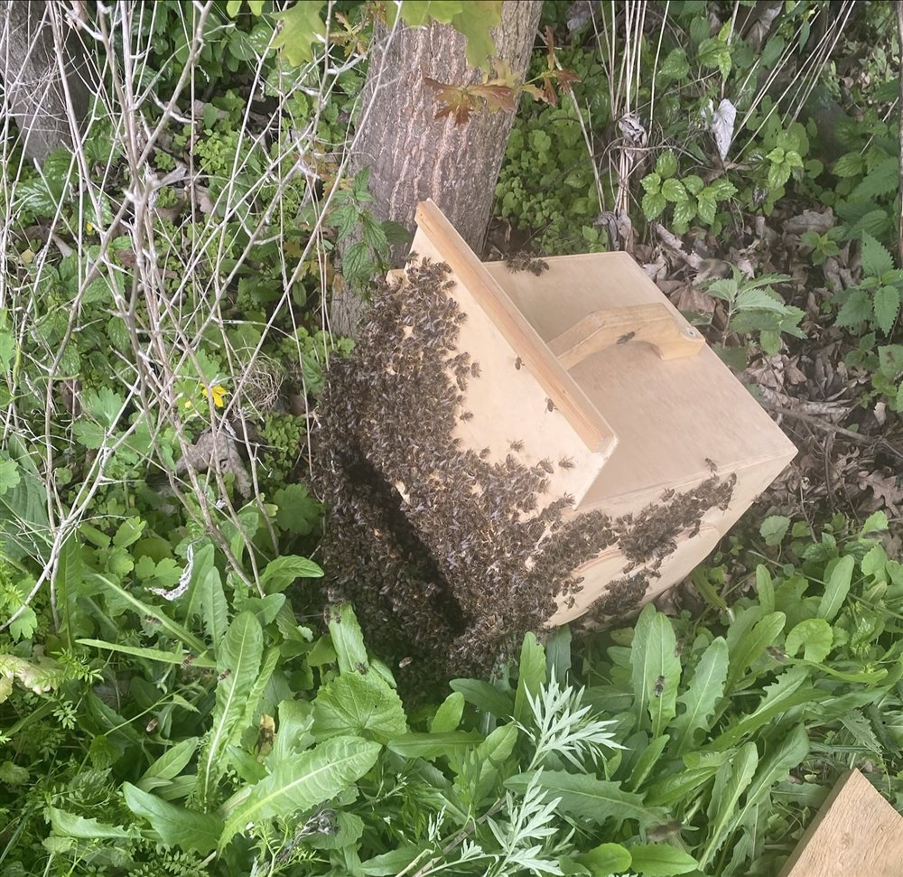
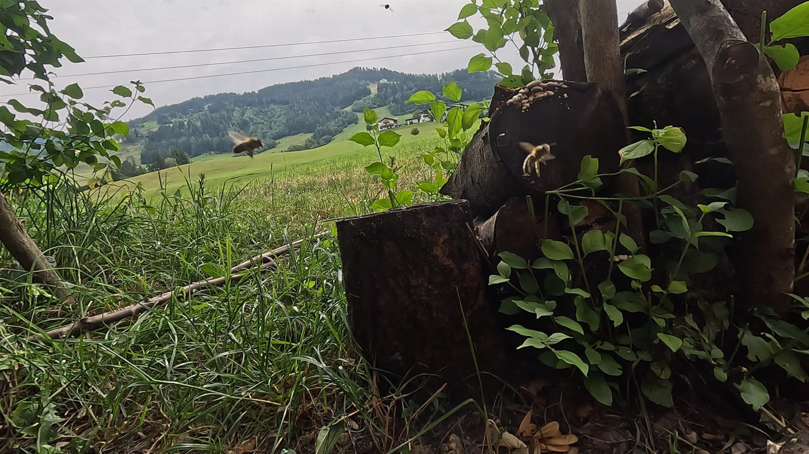

Über die BIO-Imkerei Moser 🐝
Hinter der BIO-Imkerei Moser stehen drei Leute: ein Vater und seine zwei Söhne. Wir sind Hobbyimker, die beiden Söhne noch Jungimker, und haben 2025 mit der Imkerei angefangen. Heute betreuen wir als Bio-Imker vier bis sechs Bienenvölker.

Was uns von anderen Imkern unterscheidet
Wir imkern biologisch, nach anerkannten Bio-Standards. Dazu gehört bei uns auch, dass wir unsere Bienen nicht mit Säuren wie Ameisen- oder Oxalsäure behandeln, wie es sonst weit verbreitet ist. Und während viele Imker das Schwärmen ihrer Völker verhindern, lassen wir unsere Bienen im Frühjahr schwärmen — das ist die natürliche Art, wie sich ein Bienenvolk vermehrt.
Wo wir zuhause sind
Unsere Bienen stehen in St. Johann im Pongau, auf rund 680 Metern Seehöhe. Von hier stammen alle unsere Honige und Bienenprodukte.
